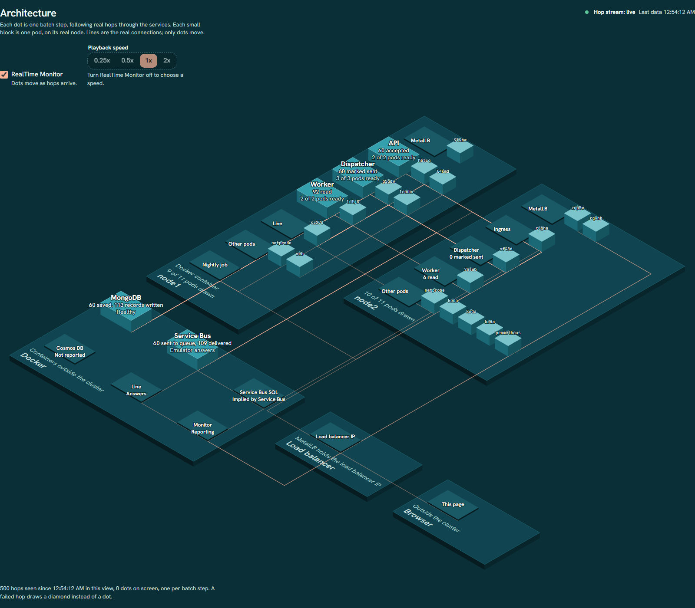
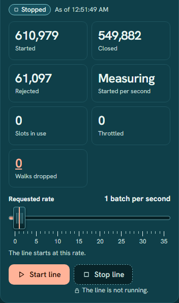
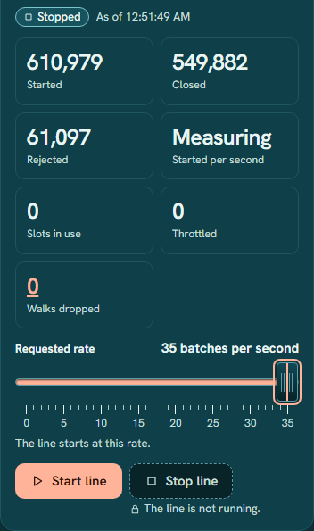
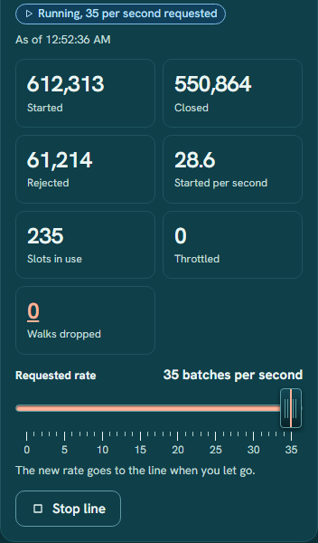
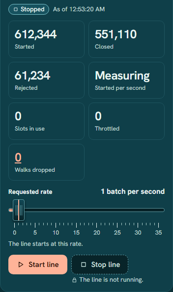
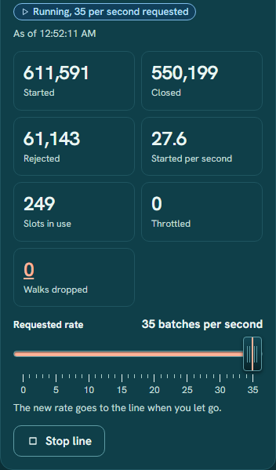
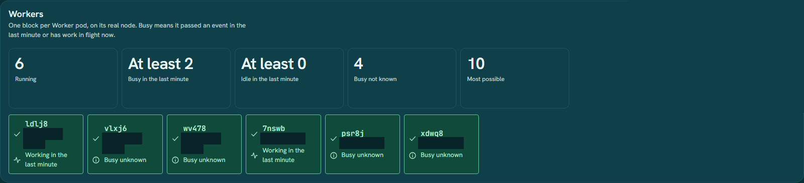
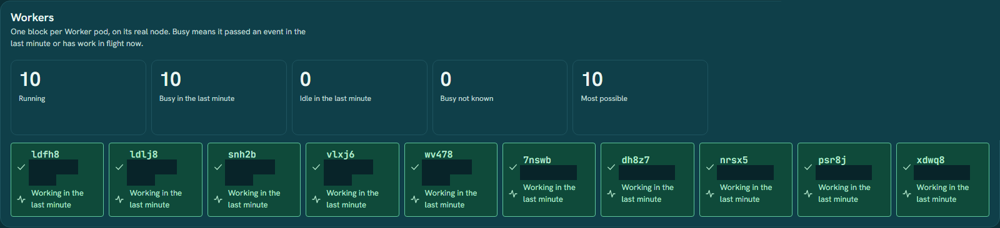
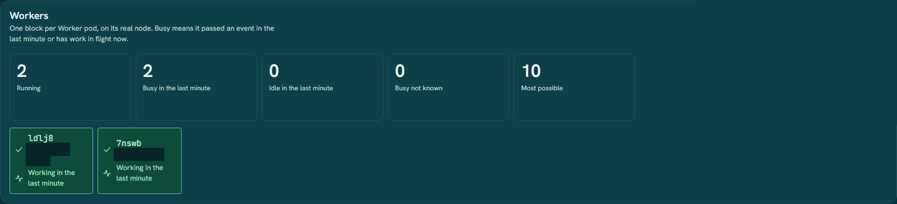
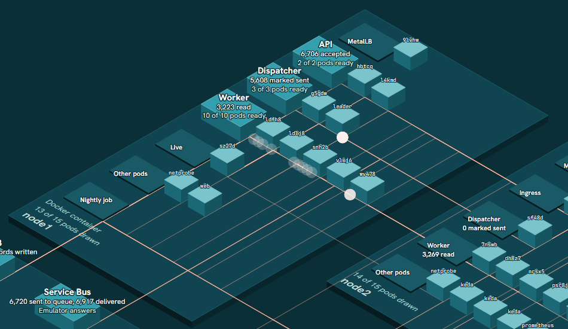

The picture
This is the Architecture view of the dashboard. Each small block is one pod, drawn on the node it runs on. Each dot is one batch step travelling along a real connection between services. Only the dots move.

What each part is
- node1, node2
The two cluster nodes
The two flat plates. Pods are the blocks on them. The label says how many pods are drawn.
- node1
API
Takes every call from the browser and from the Line, checks permissions, and stores each batch change with a pending event. It stays at two pods.
- node1, node2
Dispatcher
One pod leads at a time. It marks stored events as sent, puts them on the Service Bus queue, and hands each one to a Worker over HTTP.
- node1, node2
Worker
Receives an event, writes the step record. This is the part that scales. Each node has its own Worker group, 1 to 5 pods each.
- node1
Live
Pushes every hop to this page over a WebSocket. That is how the dots move.
- node1
Web and Nightly job
Web serves this page. The nightly job runs once a day and flags batches stuck at Dose 1 past their window.
- node2
Ingress
The one entrance to the cluster. The browser, the Line and the Dispatcher all pass through it.
- both nodes
Other pods
KEDA, Prometheus, MetalLB and the network probe. They keep the system running and measure it.
- Docker
MongoDB
The store for batches. The Cosmos DB tile is grey because this setup uses MongoDB.
- Docker
Service Bus
The queue between the Dispatcher and the Workers, run as an emulator. Service Bus SQL is the database the emulator needs.
- Docker
Line
The production line. It creates batches and walks them to Closed. This is the traffic source.
- Docker
Monitor
Runs health checks and feeds the dashboard. It runs in Docker, outside the cluster.
- Load balancer
Load balancer IP
MetalLB gives the cluster one address on the local network. Traffic enters there.
- Browser
This page
Where you are. Browser calls go to the load balancer address and on to the ingress.
The request rate slider
The slider is called Requested rate. It sets how many new batches the production line starts each second. It sits in the Production line panel on the dashboard, next to the Start line and Stop line buttons.
- batches / secondThe unit. It counts new batches, not HTTP requests.
- 0 to 35The range. The Line refuses anything outside it.
- 0.2One step of the slider.
- 1The resting position when the Line is stopped.
Batches are not requests. At 35 batches per second the Line does not send 35 requests per second. It collects every step that is due and sends them together in one bundle request to the API, once per second. The number on the slider is how fast new batches begin.
What one batch does
Each new batch is created, moved to Dose 1, moved to Dose 2, inspected, shipped and closed. Before each move the Line waits until the Worker has finished the last step. One batch in ten fails inspection on purpose and stops there as Rejected. A slider value of 5 means a new batch about every 200 ms. At 35 it is about every 29 ms. At 0 the Line idles.
Start it, move it, stop it
-
Find the panel
Open the Dashboard and look in the right column for Production line. While the Line is stopped the badge says Stopped and the slider shows 1 batch per second. Below the slider it says "The line starts at this rate." Stop line is greyed out.

-
Set the rate
Drag the slider, or click it and use the arrow keys. End jumps to the maximum. The number at the top right of the slider reads out the value in words, for example 35 batches per second. While the Line is stopped, moving the slider only sets the value. Nothing is sent yet.

-
Start the line
Press Start line. The badge changes to Running, 35 per second requested. The Started counter begins to climb. Started per second is not what you asked for. It is what the Line's own counter measured, so it ramps up over the first seconds and can sit below the request.

-
Change it while it runs
You can move the slider while the Line runs. The panel says "The new rate goes to the line when you let go." The Line takes the new value when you release the slider, not while you drag. Moving it to 0 leaves the Line running but idle.
Slots in use counts batches still walking. The Line allows 500 at once. At that limit it slows its starts until some finish.
-
Stop the line
Press Stop line. No new batch starts. Batches already walking keep going until they finish. The badge goes back to Stopped and the slider returns to its resting position of 1.

How the number becomes traffic
The slider, the Line and the cluster are joined like this. The dashed path is the one KEDA watches.
How Workers scale up
Workers do the work for every batch step, so they are the part that has to grow with load. KEDA adds and removes Worker pods. It does not look at CPU or at the queue. It looks at how fast new batches are being created.
The rules, as written in the chart
- 6.7new batches per second that one Worker is sized for
- 1 to 5Worker pods on each node, so 2 to 10 in all
- 20 swindow the rate is averaged over
- 10 swait before scaling down. Kubernetes' usual wait is 300 s.
- What KEDA watches. A Prometheus query,
sum(rate(bt_batches_created_total[20s])). That is new batches created, averaged over the last 20 seconds. A burst of calls that creates no new batch adds no Worker. - Two Worker groups. One on node1 and one on node2. Each is its own scaler with its own limit of 5, and each reads the same total. They ask for the same count.
- The API does not scale here. It has its own scaler, but its minimum and maximum are both 2, so it stays at two pods.
- Scale up follows the rate. Scale down waits 10 seconds of lower demand, not the 300 seconds Kubernetes would wait by default.
A worked example
Each group wants enough pods so that no pod carries more than 6.7 batches per second. Kubernetes rounds up. Five pods cover up to 33.5 batches per second (5 x 6.7), so the top of the slider needs more than the cap allows.
The totals are Workers across both nodes. The slider asks for up to 35, but the Workers top out at 10 whatever the rate.
What I measured
One run on one machine. One start at slider value 35, stopped through the dashboard control after 44 seconds. The cluster was a two-node k3s setup on a single PC. Times are the dashboard's own clock. These are not benchmarks.
| Snapshot | Dashboard time | Slider | Started per second | Workers running |
|---|---|---|---|---|
| 1. Idle, Line stopped | 12:51:49 AM | 1 | Measuring (no rate yet) | 2 |
| 2. Slider moved to 35 | 12:51:49 AM | 35 | Measuring (no rate yet) | 2 |
| 3. Running, Workers climbing | 12:52:11 AM | 35 | 27.6 | 6 |
| 4. Running, Workers at highest | 12:52:36 AM | 35 | 28.6 | 10 |
| 5. After stopping | 12:53:20 AM | 1 | Measuring (no rate yet) | 2 |
The timing, from polling the page every 2 to 3 seconds, so each step is good to about that:
- Start was pressed at slider 35. Workers stayed at 2 for about 18 seconds, then read 6 on the poll about 20 seconds in.
- They read 10 on the poll about 31 seconds in, and stayed at 10 until the Line was stopped at 44 seconds.
- After Stop, Workers stayed at 10 for 12 seconds, read 6 by 15 seconds and read 2 by 24 seconds.
- Started per second settled at 27 to 29, below the 35 requested. I did not find out why, so I will not guess here.
- The dashboard's health checks read 33 of 33 healthy at every poll, and Walks dropped read 0 on every snapshot.
The snapshots, side by side




